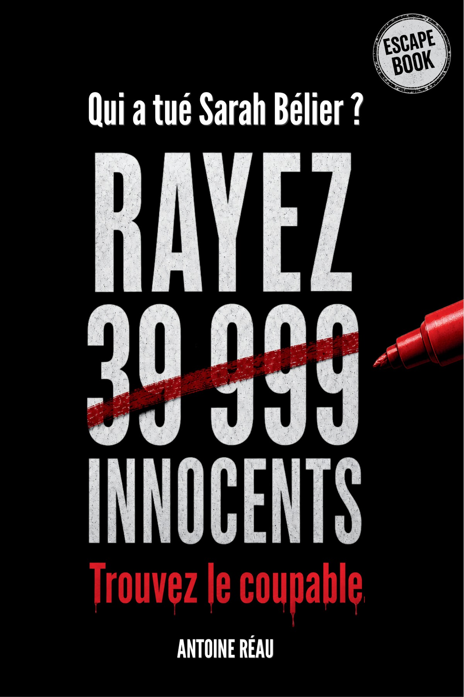
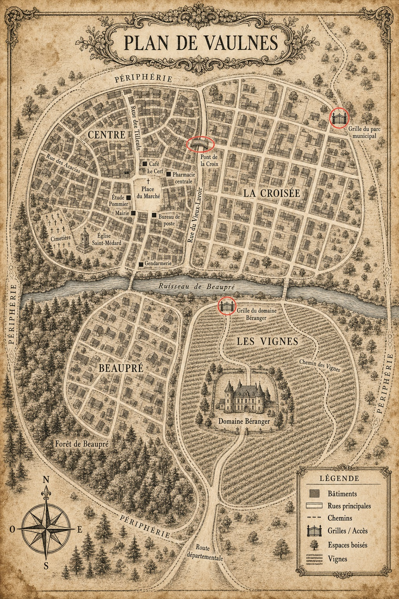

Homme, prénom en É, nom de famille de plus de six lettres, sans K/W/Y, terminé par une consonne et contenant un e.

Révélation finale
Qui a tué Sarah Belier ?
Spoiler intégral : cette page donne la réponse, le mobile et le déroulé du meurtre.
Coupable
Étienne Reverbel
Sarah Belier a été tuée par Étienne Reverbel, 53 ans, habitant de La Croisée, inscrit page 93 du registre municipal de Vaulnes.
Pourquoi c'est lui
53 ans : il respecte les trois bornes d'âge données par les témoins, puis le seuil final de 52 ans ou plus.
La Croisée : le retour observé par le Pont de la Croix élimine Les Vignes et confirme son quartier.
Après l'indice 17, il reste Reverbel et Rougemel. Sur la 4e de couverture, Rougemel est rayé : le dernier innocent tombe.
Le mobile
Reverbel n'a pas tué Sarah parce qu'elle l'avait simplement reconnu. Il l'a tuée parce qu'elle était sur le point de rendre lisible ce qu'il avait réussi à garder diffus : son lien avec la pharmacie centrale, les circuits de fournisseurs, les conversations du Cercle de l'Hexagone et les pressions exercées dans le petit monde des notables de Vaulnes.
Sarah avait commencé à recouper les dossiers de la pharmacie, les passages au Cerf, les enregistrements et les noms qui revenaient trop souvent. Son rendez-vous prévu chez Maître Pommier le 26 octobre 2025 devait mettre son dossier à l'abri.
L'audio du Cercle montre que Pommier refuse de “calmer” Sarah pour Reverbel. Pour Reverbel, ce rendez-vous devient donc le point de non-retour : une fois le dossier signé et déposé, Sarah ne peut plus être réduite au silence sans danger pour lui.
La nuit du meurtre
Sarah quitte le Cerf avec son écharpe rouge. Bertrand Koroma la voit calme, souriante. Elle ne fuit pas : elle pense connaître les gens autour d'elle.
La caméra du Café Le Cerf capte une silhouette masculine qui quitte la place et prend la direction où Sarah a été vue pour la dernière fois.
Reverbel rejoint Sarah dans le secteur du Vieux-Lavoir et du ruisseau de Beaupré. Il ne s'agit pas d'une longue poursuite : Sarah le connaît, accepte de parler, puis l'échange bascule.
Il la frappe à la tempe ou la pousse contre une pierre, puis laisse le corps dans l'eau pour fabriquer une chute accidentelle.
Robert Mauret voit la silhouette traverser le Pont de la Croix. Le point est décisif : ce n'est pas un détour, c'est un retour vers La Croisée.
Reverbel rentre à La Croisée. Il a le temps de repasser par l'accès concerné avant la fermeture de la grille à minuit.
Le corps est retrouvé dans le ruisseau. La gendarmerie retient la chute accidentelle, exactement la mise en scène voulue par le tueur.
La carte confirme le trajet

Les fausses pistes finales
Étienne Rougemel est le dernier innocent : il coche presque tout, mais son nom est rayé sur la 4e de couverture. Étienne Renevier tombe juste avant, car il n'a que 51 ans. Émile Leclerc sort par l'âge et le prénom. La solution ne repose donc pas sur une intuition : elle repose sur une suite de contraintes vérifiables.